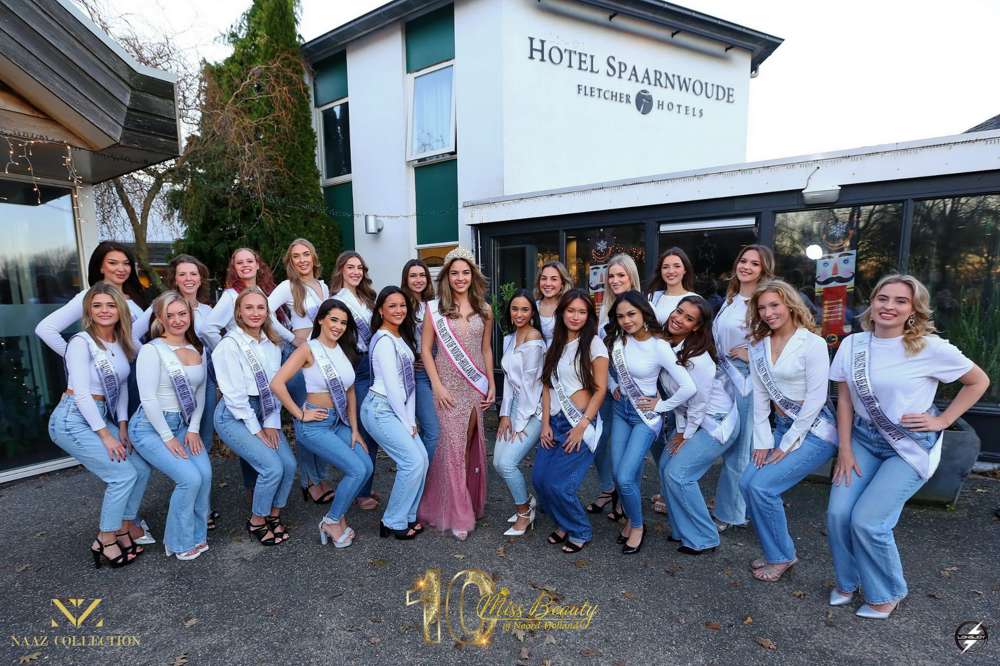
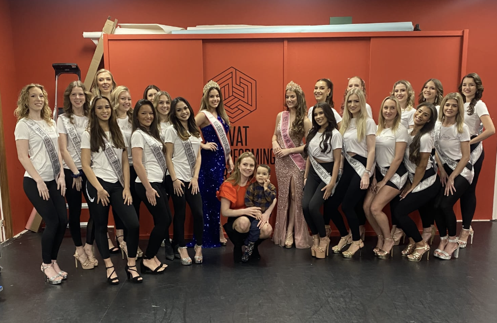

Het was eigenlijk heel erg per ongeluk. Vanwege een TikTok-edit. En direct daarna een advertentie voor: Miss Beauty of the Netherlands, dacht ik.. waarom niet. Ik had voor mijn gevoel toch niks te verliezen. Hierna ben ik uitgenodigd voor een auditie. Waarna ik een finalist ben geworden. Ik ben er dus eigenlijk een beetje in gevallen. En pas door mijn eerste verkiezing te lopen, leerde ik hoe leuk ik het vind.
Miss Beauty of Noord-Holland (wat nu Miss Noord-Holland is) en Miss Aura Netherlands. Hiervan heb ik allebei helaas niks gewonnen. Miss Noord-Holland was een van de grotere verkiezingen, en was op dat moment ook een van de grootste verkiezingen van Nederland. Deze wordt daarom ook gerund door een groot team, en had een groot budget. Dit zorgde ervoor dat ik veel meer de verkiezingswereld rustig leerde kennen. En ook duidelijk leerde kennen. Het betekende dat we veel cursussen kregen van mensen die al goed bekend waren in de verkiezingswereld.


Miss Aura was een kleinere verkiezing. Deze had wat minder budget, en werd gerund door een vrouw en haar baby. Maar hierdoor hadden we meer tijd en ruimte om jezelf meer te verkennen. En vanwege minder budget werkten we vaker met wat kleinere winnaressen, en was er meer budget voor fotografen. Dit zorgde voor veel nieuwe dingen en veel duidelijke connecties.
Mensen zien verkiezingen vaak als echte competities. Waar de meiden elkaar haten. En er alles aan doen om te winnen. Dit is verre van mijn ervaring. En Nederlandse Miss-verkiezingen zijn ook 5-6 maanden lang, waarbij je de meisjes om je heen erg goed leert kennen. En er wordt ook naar gekeken of je lief speelt. Er worden eigenlijk altijd gelijk vriendschappen en banden opgebouwd. Je kan ook niet anders, omdat je samen 6 maanden naar iets toe werkt.
Zo is voor mij een verkiezing: hard werken, jezelf tegenkomen en community bouwen.
Vanwege verkiezingen heb ik meer vriendinnen op plekken zoals Breda en Limburg. Ook weet ik meer wie ik ben. Hoe ik gezien word. En hoe ik mezelf neerzet in verschillende situaties. Hoe ik met social media omga. En hoe ik voor grote publieken sta en praat.
Natuurlijk zijn verkiezingen niet alleen maar regenbogen en zonneschijn. Maar voor mij wegen de voordelen zeker op tegen de nadelen.